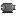
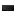
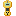
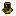
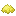

Electrodynamics est le mod fondateur de la suite. Il introduit un système électrique réaliste basé sur la tension, le courant et la résistance, ainsi qu'un ensemble complet de machines industrielles, de nouveaux minerais et de ressources avancées.






Électricité
Système électrique réaliste : tension (V), courant (A), résistance (Ω). Câbles, transformateurs, disjoncteurs et réseau de distribution.
Machines
Broyeur, four électrique, électrolyseur, mélangeur chimique, compresseur et bien d'autres machines industrielles alimentées en électricité.
Minerais & Ressources
Aluminium, plomb, titane, argent, lithium, vanadium, uranium et bien d'autres. Chaque minerai a ses propres propriétés et usages.
Équipements
Armures avancées, jetpack à hydrogène, bottes hydrauliques, casque à oxygène. Des équipements pour explorer les environnements les plus hostiles.
Générateurs
Diverses sources d'énergie électrique pour alimenter vos machines : générateurs thermiques, solaires et autres.
Machines avancées
Chambre d'électrolyse, foreuse automatique, et autres machines de fin de partie pour automatiser votre production.
Nuclear Science s'appuie sur Electrodynamics pour ajouter des réacteurs nucléaires, un accélérateur de particules et des équipements de protection contre les radiations. C'est le mod de fin de partie de la suite.





Réacteurs nucléaires
Trois types de réacteurs : fission (simple), sel fondu (avancé) et fusion (ultime, +6 MW). Chacun avec ses propres mécaniques de construction et de gestion.
Radiation
Système de radiation par ray-casting. Protection via combinaison Hazmat, comprimés d'iode, blindage par blocs. Détection avec le compteur Geiger.
Accélérateur de particules
Accélérez des particules à des vitesses proches de la lumière pour créer de l'antimatière et de la matière noire. Deux méthodes : ligne droite ou cyclotron.
Automatisation
Réseau logistique RL pour automatiser le ravitaillement, la surveillance et le contrôle des réacteurs à distance. Tunnel quantique pour le transport instantané.
| Page | Mod | Description |
|---|---|---|
| Items Nuclear Science | Nuclear Science | Tous les items avec images et descriptions |
| Réacteur à fission | Nuclear Science | Construction étape par étape |
| Radiation | Nuclear Science | Protection et détection |
| Électricité | Electrodynamics | Comprendre le système électrique |
| Commencer | Electrodynamics | Premiers pas dans le mod |
| Minerais | Electrodynamics | Tous les nouveaux minerais |